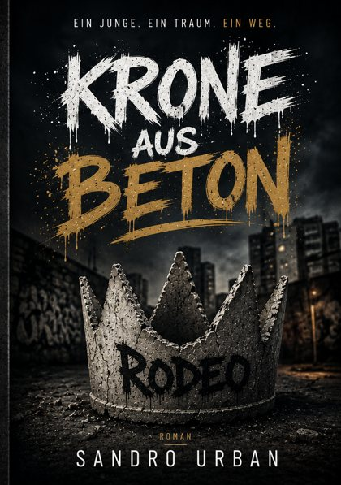

Roman
Krone aus Beton
Roman über Rap, Ruhm und Absturz
Robert wächst im Hochhausblock in Hannover auf und will Rapper werden. Aus dem Jungen aus Krähenfeld wird Rodeo: Millionen Klicks, ausverkaufte Hallen, Geld und Ruhm. Er trägt eine Krone, doch sie ist aus Beton. Ein Roman über den Weg nach oben und den schwereren zurück zu sich selbst.
E-Book 6,99 €Taschenbuch 19,99 €
Erhältlich als E-Book & Taschenbuch
E-Book: ISBN 978-3-565575-76-3 · Taschenbuch: ISBN 978-3-565575-71-8